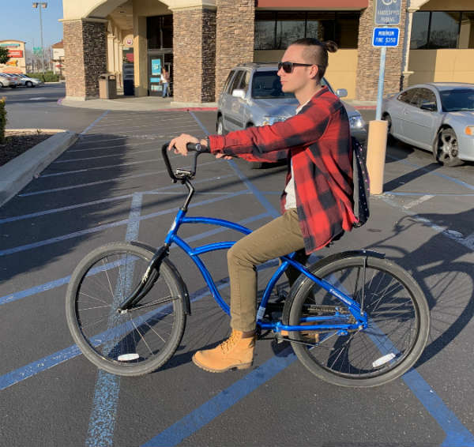
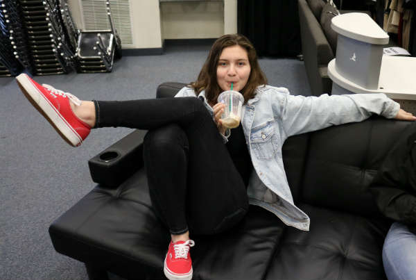
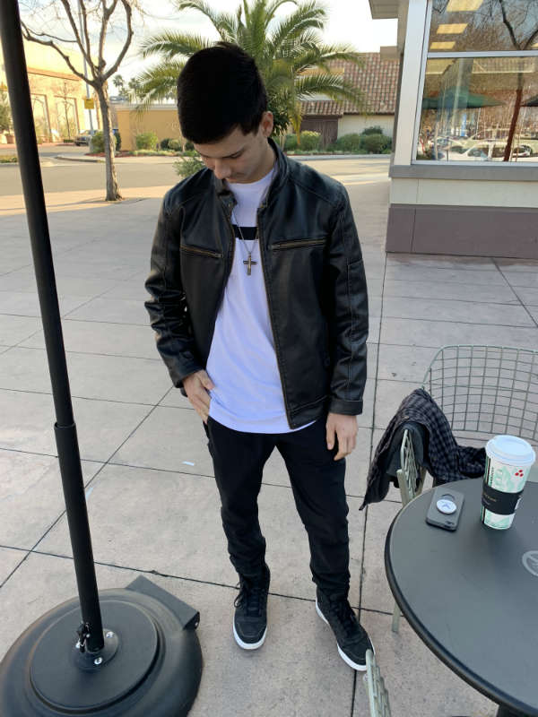
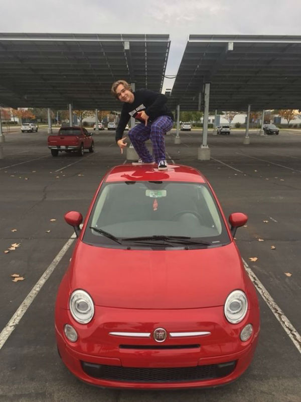

I enjoy a busy schedule and cosistency. So pretty much every day of my ideal spring break would be the same.
My mornings would star with me waking up at 5:00am and making a cup of black coffee in my favorite coffee cup (the black one of course). Then I'd make myself a nice, healthy breakfast. My breakfast would be something like chicken, spinach, hashbrowns, and eggs. Then I would go to track practice at 9:00am and run 2x300m, 2x200m, 2x150m, and 4x flying 40s. Then after practice ends at 11:00am I ride my bike to the gym and lift.
At the gym I do squats, cleans, deadlifts, leg press, bench, and then row a 5K. After two hours at the gym I ride home and get ready for work. Then at 3:30pm I leave my house and ride my bike to work. I clock in at 4:00pm and work to 8:00pm.
After work I ride home and get a shower and get changed to go to a dinner with my friends. We would go to Sakura Chaya. I get a spider roll, shrimp, scallops, steak, and fried rice. Then we go to see the latest Marvel movie. After the movie we all go home.
  On Saturday I sleep in. I go to work with my dad at 8:00am and wash cars and do work at the car lot. Then I go home at 3:00pm. I get showered and ready for work at 4:00pm then my dad gives me a ride to work. I clock in at 5:00pm and work to 9:00pm Then after work I go home and get ready for Sunday. On Sunday I wake up at 7:00am and get ready for a marathon. I go to Shaver and run the marathon in 3 hours and 15 minutes. I spend the rest of the day in Shaver and take great pictures of nature before heading home.